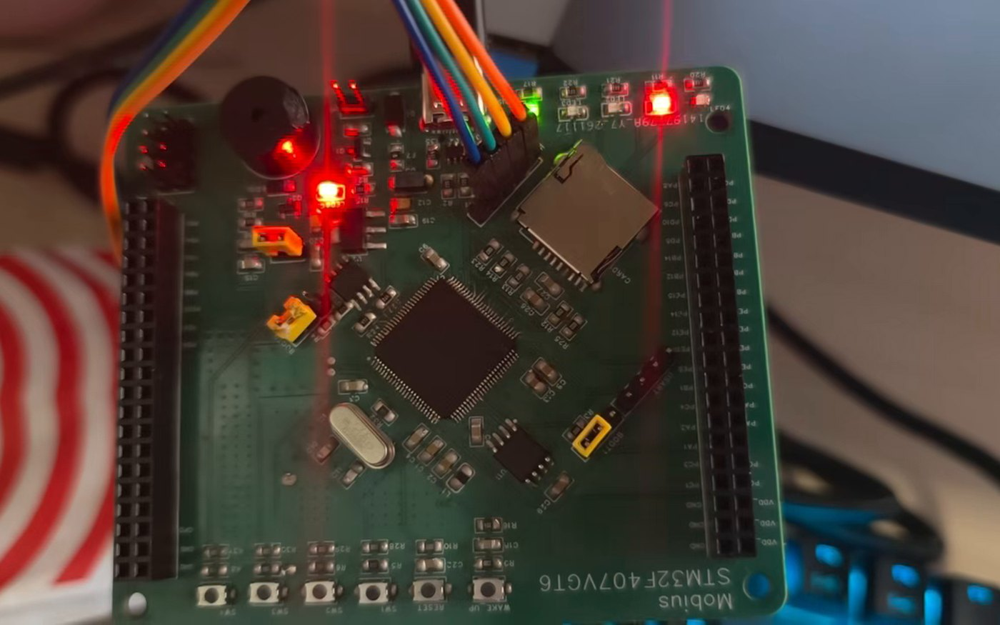
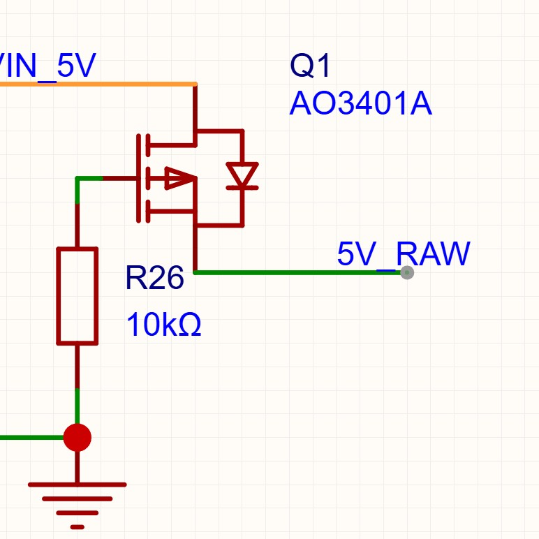
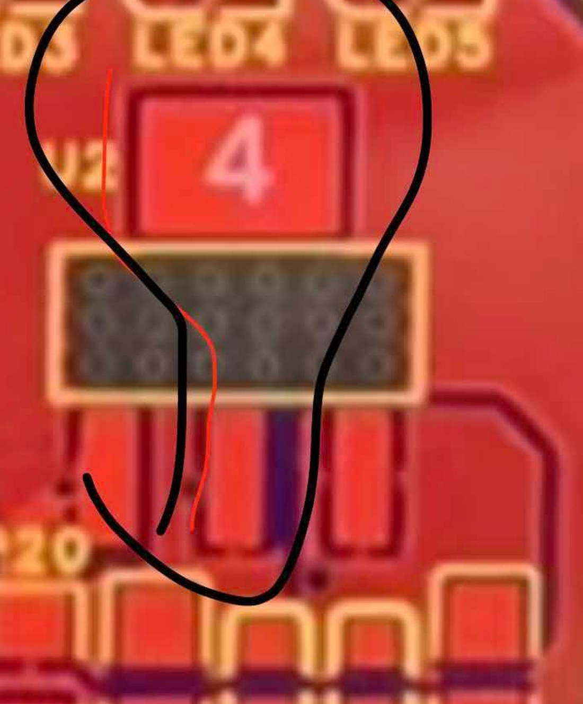

从一张空白原理图到一块能亮的板子，中间隔着一个礼拜的拉线、两次改板，和无数个「为什么不通电」。

一、原理图设计
开工之前先写功能清单，不写清单就动手，画到一半一定会发现少个上拉、多个电容。我的清单最后收敛成这样：
- 供电：Type-C 口 5V 进，LDO 降到 3.3V，VDDA 单独一组磁珠 + 电容
- 主控：STM32F407VGT6，LQFP100，1MB Flash / 192KB RAM
- 时钟：8MHz 无源晶振走 HSE，主频拉到 168MHz；32.768kHz 给 RTC，配 CR1220 掉电走时
- 人机：SW1–SW4 四个轻触键，LED1–LED4 四个指示灯，外加一个无源蜂鸣器
- 外设：SD 卡座（SDIO）、SWD 四针调试口、BOOT0 / BOOT1 跳线帽，另外把 USART、I2C1 / I2C2 的引脚也单独引出来了
- 扩展：两排 2.54 排针，把能引的 GPIO 全引出来
器件选型：先看限流，再看封装
选元件时最该盯的是两个参数：限流和封装。
- 限流决定你会不会「点亮一颗电容」。电流选大了，元件是真会冒烟的。
- 封装直接决定你接下来焊接的难易程度。新手一律选 0805！！！！——我连 0402 都没碰过，0603 已经小得让人手抖了。
数据手册是免费的答案
正经的选型流程：在立创商城搜元件 → 把需要的参数（电压、电流、封装、通道数）填进去 → 点开候选 → 下数据手册（芯片类一定要下）→ 看典型应用电路。
那张典型应用图，基本就是「照着画」的答案。比如 「AMS1117」这类 LDO，手册里画得清清楚楚：输入输出各配一大一小两个电容——大的储能，小的滤高频，连参考容值都给你标好了。
手册动辄几十页，英文、表格、曲线——丢给 AI 读比自己硬啃轮椅得多：「这颗芯片的典型应用电路是什么」「这几个电容分别起什么作用」，问完照着画就行。
先补点原理，不然画完也不知道为什么
画之前最好知道手里这几颗是什么，不然图画完了也不知道为什么这么接。三种常见的电源方案，区别就在于「怎么把多余的电压处理掉」：
- LDO（线性降压）——把多余的电压「烧」成热。外围只要两个电容，纹波小、没有开关噪声，但压差越大越烫：AMS1117 从 5V 降到 3.3V，那 1.7V 全变成了热。适合小电流、压差小的场合。
- Buck（开关降压）——用开关管把电压「斩」成方波，再靠电感 + 电容滤平。效率能上 90%，但外围多一个电感，纹波大、有开关噪声，布局不注意就去干扰别人。适合大电流、压差大的场合。
- Boost（开关升压）——反过来，把低电压泵高，同样靠电感和开关完成。
然后是电容。同样是 100nF，陶瓷高频特性好、ESR 小，专门去耦，贴在芯片电源脚旁边；钽电容容量大但怕过压，一旦失效往往是短路；电解容量最大、便宜，但高频特性差，用在储能位置。容值一样、用处完全不同——这是很多新手第一次选型时才发现的事。
再往下是三极管和二极管：共射放大、共集跟随、开关管——同一颗三极管，接法不同用途就不同；二极管有整流、续流、齐纳稳压、防反接、TVS 防浪涌，看的参数也各不相同。这些是模电的内容。我就是技术选考生，选修里的「电子控制技术」帮我认得这些符号、知道它们是干些什么的；但真到算偏置、挑型号，还是得回头翻书。
让画面整洁的几条规矩
- 标签朝上：所有元件的位号和参数保持同一方向，别横七竖八
- 分布均匀、横平竖直：不追求好看，追求「能看懂」
- 多用网络标签：同一根线不用真画过去，起个名就接上了。模块之间的耦合立刻降下来，画面上的线「少而精」
- 每个模块用方框圈起来，器件摆在方框中心，右下角标出模块名（电源 / USART 引出 / EEPROM…）——做完这一步，图纸会突然变得很舒服
最后跑一遍 DRC，没有报错就可以开始画 PCB 了。
补一句本项目的经验：GPIO 引出那部分，可以先不标网络。等 PCB 画到一定程度、引脚位置定下来了再回去标，布线会顺很多。
几个我当时踩过、后来每次都会查的点
- BOOT0 一定留跳线或下拉电阻，不然程序跑飞了只能拆焊盘
- VDDA 必须经磁珠或 0Ω 从 VDD 隔离，ADC 才稳；旁边配 100nF + 1uF
- 复位电容 100nF 别省，上电复位不稳的时候，现象是程序随机不启动
- 每个电源引脚都放一个 100nF，这是 ST 手册里写的，照做就行

图是嘉立创 EDA 导出的多页拼图，缩小看会糊——点任意一张就能放大，能看清网络标号。
二、PCB 设计
先画板框，再定层数
板框建议一开始就画 100×100——嘉立创每个月白嫖两次打板上限，懂的都懂。先给自己一个宽松的场子，等布局定下来了再往回收，把板框缩到刚好包住元器件：分布均匀、紧凑，不留大片空白，也不挤到没地方走线。
关于下单：嘉立创的界面年年都在变，直接去 B 站搜教程跟着点一遍就行——选参数、上传 Gerber、付款，视频里比我写得清楚。
然后是层数。两层板也能安装 STM32F407VGT6，但这颗芯片引脚密、外设多，两层板上 3.3V 和 5V 的电源线很难排开——想让它们不交叉、不绕远路，基本做不到。所以直接上四层板：
顺便说几句打样时能选的工艺，我也是画到第二块板才搞明白：
- 阻焊颜色——默认绿色，其实可以自己挑：黑、白、蓝、红、黄、紫都有。但别只看好看：黑色和白色的板子，焊盘跟周围对比度低，焊接时很难看清，我第一次焊深色板就吃过这个亏；另外选非绿色有时要加钱，或者多等几天。
- 沉金（ENIG）——一种表面处理工艺，在铜焊盘上先镀一层镍、再镀一层很薄的金。作用是防氧化、表面平整、能放得久。跟默认的喷锡（HASL）比：喷锡便宜、耐焊，但焊盘表面像结了一层薄锡壳，不平整，脚距一密就容易连锡；沉金平整得多，细间距的 QFP 焊起来更稳，代价是贵一些。脚距密、要放很久、或者准备反复返修的板子，这个钱值得花。
- 彩色丝印——丝印默认白色，现在也能选彩色，甚至把图片印上去（就是前面说的「氪金加彩色图片丝印」）。纯装饰，会加钱，但确实好看。
顶层：主要走信号，兼顾一部分 5V 铺铜。
第二层 GND：整片地平面。它是整块板子的“回流底”——信号从顶层走过去，回流电流在紧贴的地平面上走最短路径返回，环路面积小、干扰也小；同时它把上下两层隔开，降低层间串扰。
第三层 VDD：整片 3.3V 平面（本项目铺的是 VDD_MCU 和 VDD_IO）。电源平面相当于一张巨大的铜箔，把电源阻抗压到很低，去耦电容才真正能起作用。
底层：次要信号和补线。顶层挤不下去的线，打个过孔下到底层继续走；另外它还能铺一层 GND，算是第二重屏蔽。
四层的核心价值不是“线更宽”，而是有了两个完整的参考平面：信号走线有明确的回流路径，电源有低阻抗的供电层，而且那些在两层板上必须“绕远路”的电源线，直接在内层平面里“穿”过去就行。

布局：先把每个模块搬到大致位置
布局不是一个个拖元件，而是按模块整块搬：在原理图里框选一个模块，按 Ctrl+Shift+X，PCB 里对应的元件就会一起被选中，直接搬到大致位置、排齐。比一个个找快太多，也不会漏掉谁。
- 飞线尽量短、不交叉：飞线就是网络连接关系的可视化，一根飞线横穿整块板，基本就是布局没摆对
- 滤波、储能电容靠近对应元件——但也不要太近，太近了焊接时极难下手，极易连锡，本人第一次焊接深受此折磨
- 丝印要整齐，靠近对应元件。焊接的时候你靠丝印找元件，丝印乱放就是给自己挖坑
- 排完记得开一次 3D 预览（上方菜单 视图 → 3D 预览），能直接看出来器件有没有碰到一起、高低是不是合理


走线：差分对、45° 和包地
有三类线不能当普通走线处理：
- USB_DP / USB_DM：必须建成差分对，等长、平行、对称，并且尽量贴近地平面走
- 8MHz 晶振两根线：同样按差分对处理，短而直，不跳层。晶振与芯片引脚之间的距离直接影响是否能起振
- USB 接口放在板子边缘：引线不进板子中间绕一圈，插拔也方便
本项目的布局切入点很特殊：STM32F407VGT6 斜 45° 摆放。四边引脚技术里，横平竖直的方向会让大量连线都往四个方向拥挤；斜 45° 之后，引脚天然分散到四个方向，走线空间突然就松了，也更容易把电源、晶振、USB 这几组分开摆。
晶振：围一圈地孔，再禁一块铜
晶振是这块板上最“敏感”的东西：它输出的是小信号，极容易受干扰，也容易干扰别人。所以做两件事：
- 周围打一圈 GND 过孔：像围墙一样把它围起来，它的回流就被限制在这一小块里，不会淌到芯片其他部分，也把外部噪声挡在外面
- 设置铺铜禁止区：在晶振下方和周围不铺铜。原因很实际：铜皮和晶振引脚会形成寄生电容，这个电容会去“白吃”负载电容的值，轻则频率偏了，重则根本不起振；另外晶振外壳是金属的，铺铜碰上就是短路
电源树：把 5V 和 3.3V 都拆成两段
这块板子的电源路径很短，但分段很多：
USB 5V ──[Q1 AO3401A 防倒灌]── 5V_RAW ── ┌── 5V（排针输出）
└── AMS1117 ── 3.3V ──┬── VDD_MCU（芯片核心）
└── VDD_IO （外设）5V_RAW 和 5V 之间那个器件是什么？图 1 里那个就是：一颗 P 沟道 MOS（AO3401A）串在电源线上，源极接输入，漏极接输出，栅极经 10kΩ 下拉到地。

它干三件事：
- 正常导通：栅极接地，Vgs = 0 − 5V = −5V，MOS 全开，压降只有几十毫伏，几乎不发热
- 防反接：万一电源接反，Vgs 变正，MOS 关断，板子不工作也不烧
- 防倒灌：这条最重要。调试时板子可能重叠着电源（USB + 调试器），没有它，两路 5V 会“对打”，轻则发烫重则烧接口
10kΩ 那个下拉不能省：它保证输入断开时栅极不会悬空，MOS 稳定关断。至于5V_RAW 和 5V 为什么要拆开：分段之后，某一段短路不会把整个 5V 拖死，且可以一段一段查——这个设计帮我避免了好几次短路，不是夸张。
为什么 3.3V 也要拆成 VDD_MCU 和 VDD_IO？两路之间用一个 1×2Pin 的 2.54 排针（跳线帽）连接，各自配一套滤波 + 储能电容：
- 隔离故障：外设（LED、SD 卡、蜂鸣器、排针）短路或抽大电流，也不会把 MCU 核心拖到复位，核心能继续跑
- 方便排查：拔掉跳线帽，两路就彻底断开，能分别测电流、分别判断哪一半出了问题
- 电容不能共用：拆分之后，原来整片连在一起的去耦电容就不成立了——每一路都要自己的 100nF 和储能电容，否则电源平面被拆开后，另一半就没人给它“缓冲”了
铺铜：不是装饰，是必需
VDD_IO 和 VDD_MCU 占比大，所以第三层直接做成这两路的铺铜；5V 则在顶层铺。铺铜不是为了好看，它干四件真事：
- 降低地阻抗和电源阻抗：回流路径变短，四层板上的地平面就是靠铺铜实现的
- 散热：LDO、MOS 这些发热元件，靠铜皮把热带走
- 载流：整片铜能过的电流比一根细线大得多，电源尤其需要
- 屏蔽和抗干扰：完整的铜层把敏感信号包在里面
铺不了铜的走线，尽量加粗到 25–40mil。铺铜管理器里有个很关键的选项：铺铜连接方式选“直连”（工具 → 铺铜管理器 → 规则）。
“直连”是指焊盘与铜皮完全连通，对应的是另一种叫“花焊盘”的连接（四根细筋）。花焊盘焊接时热损失小、好焊，但载流和散热都差；直连相反——电阻最低、载流最好、散热最快，代价是手工焊时铜皮吸热快。所以电源相关的铺铜一律直连，信号焊盘可以保留花焊盘。
飞线、过孔与 GPIO 引出
- 先关掉大网络的飞线：在左侧工程设计 → 网络 → 飞线里，把 VDD、5V、GND 先隐藏。不然满屏幕都是线，什么都看不清
- 芯片周围的 VDD 滤波电容先摆好，后续走线时再微调
- 顶层走不了，就打过孔下到底层——但记住：过孔不能“随手打”，它会把地平面摘出一个洞
- VDD 和 GND：在对应焊盘旁边打对应网络的过孔，连到内层平面上（这时得把对应飞线打开），这样 DRC 就不会报未连接
- GPIO 引出：看个人习惯，左半边引左侧排针、右半边引右侧排针最省事。先把线引到焊盘，回原理图标好网络，再回 PCB 连线

DRC 与丝印
走完线先跑 DRC，把报错一条条清干净（间距、未连接、丝印压焊盘），然后铺铜。最后才是丝印的两层工作：
- 标注性丝印：GPIO 引出、USART、BOOT、I2C……让人一眼知道这排针上面是什么
- 装饰性丝印：自己的昵称、日期、板子名和核心芯片型号——这就是板子上“Mobius STM32F407VGT6”的来历
- （还可以氪金加彩色图片丝印，我这次没加）
第一版翻车：AMS1117 的 2、4 脚没连
第一版板子打回来，上电的那一瞬间，电源指示灯就炸了。

查下来原因很朴素：AMS1117 的 2 脚和 4 脚（散热焊盘）没有连上 3.3V。这颗 LDO 的 2 脚是输出，4 脚是与它同电位的散热片——两个脚都没接通，整块板的 3.3V 只能靠一条细细的走线兜着。电流全挤在这一根线上，上电没几秒，最先扛不住的是电源指示灯。
原理图上 2、4 脚是连着的，画 PCB 的时候却断了——这类问题 DRC 不一定报（两端各自都“连上了”别的网络），得靠网络高亮自己逐条看。
教训就一句：打板前一定要仔细过一遍自己的原理图和 PCB。这花不了你多少时间，但极有可能让你省下多打一次板的费用和 4、5 天额外的等待。
具体怎么过：
- 原理图跑 DRC，再逐模块检查电源和地有没有遗漏
- PCB 里开网络高亮，把 VDD_MCU、VDD_IO、5V、GND 一个个点亮，看有没有“孤岛”焊盘
- 特别留意 LDO、MOS 这类多脚同网络的封装（AMS1117 的 2 脚和 4 脚就是同一个 VOUT）
- DRC 会报“未连接”，但“连错网络”它不一定报，这部分只能靠人眼
三、焊接技巧与心得
工具和姿势
- 多用焊锡膏，少用焊锡丝——焊锡丝太容易一下子加多，膏好控制量
- 烙铁温度 360°
- 高温海绵一定要浸湿，干的海绵会直接焦掉，且擦不干净烙铁头
- 烙铁用完立刻放回烙铁架，不要随手放在桌上
- 戴口罩，开通风。我买了一台吸烟装置——松香（焊油）的烟是有毒的，一个下午下来嗓子会告诉你
- 不要怕烫。手指贴近烙铁头是常事，习惯就好
贴片元件：挤一点、摆正、压平、焊
一个 0402 或 0805 的电阻，正确顺序是这样：
- 先在一个焊盘上挤一点焊锡膏
- 用镊子把元件摆正，压平（很重要！！！）——不压平就会一边翘起来，下一步烙铁一碰就飞
- 再用电烙铁焊上
整个过程要快、准。时间一久，焊锡表面就生成氧化层，难以贴合焊盘，也难操作，最后就是虚焊。虚焊最麻烦的地方在于：它看起来是焊上了的，但不通。
芯片焊接：方向比手法重要
先确定位置和朝向，非常重要。我就是把芯片上的大圆对到了丝印的圆点上——方向整个反了。结果一个下午都在跟一颗“防反”的芯片较劲，一度怀疑自己买了假芯片。
摆正之后（不正就白干），手法如下：
- 一只手指压住芯片——不压住，一挤焊锡膏就跑位
- 另一只手挤焊锡膏（不要加多）
- 烙铁来回滑动，听到“滋滋”声，锡会自动贴合焊盘

焊多了怎么办：吸锡带与热风枪
锡加超了，用吸锡带：焊盘上涂点焊油，吸锡带盖上去，烙铁压住往一个方向拖。手法怎么说呢——多试几次就知道了，实践出真知。
如果芯片整体焊错了（比如方向反了），得用热风枪取下来。正确用法：
- 温度 300–350°C（无铅焊锡 350–380°C），风量中低
- 板子放平，芯片四周涂一圈焊油/助焊剂，帮助传热
- 风嘴离芯片 1–2cm，环绕着吹——不要定点死吹一个点，要让整片均匀受热
- 看到焊锡变亮、芯片能轻微移动，用镊子从侧面轻轻抬（不要从上面夹，会把焊盘带起来）
- 取下后趁热清焊盘：加锡 + 吸锡带拖平，清洗干净再重装
- 别对着塑料件吹（Type-C、SD 卡座、排针塑料），几秒就化
插件元件：排针与 USB
- 排针：手指抵住一部分，放到指定位置，先在一个脚加焊锡膏焊上固定（此时还可以微调），确认正了再焊其他脚
- Type-C：用指甲抵住先固定四个固定脚，再焊信号脚
- 二极管极性：画短线的一端是负极，别装反


先分类，再开工
一开始就把电阻、电容、二极管、芯片分类摆好。焊到一半去一堆开关里翻 100nF，那感觉比焊芯片还难受。
查元件型号的方法：先看丝印，再回原理图 Ctrl+F 搜索位号，就能看到具体型号和参数。
那次「假芯片」事件
焊完不亮。以为是自己焊坏了，查了一整个下午，最后把能测的都测了：
- VDD–VSS = 3.3V，供电正常
- VSS = 0V，地正常
- VCAP = 0.3V，而它应该是 1.2V
- PA13（SWDIO）稳定在 0.3V，内部上拉像是失效的
- 两颗芯片表现一模一样；手指按着芯片测，数值不变
VCAP 这路是 STM32F407 的内部稳压器输出，它是硅片里的模拟电路：只要 VDD–VSS 在 1.8–3.6V，VCAP 就必然是 1.2V——不依赖软件、不依赖复位、不依赖 SWD。三项都对，结论只剩一个：芯片里的这部分坏了。
后来才知道怎么回事——淘宝上“全新原装”20–30 元的 F407，基本是拆机芯片（从旧板上吹下来重新磨亮、改丝印的）。这类芯片常见表现就是：VCAP 不是 1.2V、丝印模糊、引脚镀层不匀，以及——有时候能用，有时候完全不理人。
后来把芯片转正、重新焊了一遍，灯就亮了。所以那次「假芯片」的怀疑，一半是被方向坑的，一半是淘宝的锅。
所以买芯片请认准正规渠道，贵几十块钱，但能把“芯片问题”这个变量完全排除掉。调试最怕的不是错，是你根本不知道自己在查一个真的错误还是假的错误。
调试主要靠万用表。善用 AI，但不要全信 AI！！！——它能帮你理清思路、列排查表，但最后落到万用表上那个数字，还得你自己量。
第一次焊接很难，但相信我，当你点灯的那一瞬间，一切都值得。
四、STM32F407 系列 Keil 环境配置
硬件跑通只是第一步，软件环境不对，板子照样一动不动。这部分我按顺序记一下，换台电脑能照着装。
1. 装 Keil MDK 和器件包
- 装 Keil MDK-ARM V5（现在叫 MDK v5，装的其实是 µVision + ARM 编译器）
- 打开
Pack Installer，搜 STM32F4，装Keil::STM32F4xx_DFP器件支持包 - 装 ST-Link 驱动，插上调试器后设备管理器里应该出现 STM32 STLink
2. 新建工程
新建工程 → 选芯片 STM32F407VG → 弹窗里勾上 CMSIS Core 和 Device: Startup，其余先空着。然后在 Options for Target 里把 Debug 选成 ST-Link Debugger，右侧 Settings → Port: SW，能扫到 SW Device 就说明通了。
3. Flash Download 别忘了配算法
Options for Target → Utilities → Settings → Flash Download，勾 Erase Full Chip 或 Erase Sectors，Programming Algorithm 里必须添加 STM32F4xx 1MB Flash。没加算法，点下载会报 No Algorithm found——这是我卡最久的一个坑。
4. 时钟树：HSE 8MHz 拉到 168MHz
F407 的标准配置是：HSE 8MHz → PLLM 分频到 1MHz → PLLN 倍频到 336MHz → PLLP 二分频得到 168MHz 系统时钟。HAL 里长这样：
RCC_OscInitTypeDef osc = {0};
osc.OscillatorType = RCC_OSCILLATORTYPE_HSE;
osc.HSEState = RCC_HSE_ON;
osc.PLL.PLLState = RCC_PLL_ON;
osc.PLL.PLLSource = RCC_PLLSOURCE_HSE;
osc.PLL.PLLM = 8; // 8MHz / 8 = 1MHz
osc.PLL.PLLN = 336; // 1MHz * 336 = 336MHz
osc.PLL.PLLP = RCC_PLLP_DIV2; // 336 / 2 = 168MHz
osc.PLL.PLLQ = 7; // USB 48MHz
HAL_RCC_OscConfig(&osc);
RCC_ClkInitTypeDef clk = {0};
clk.ClockType = RCC_CLOCKTYPE_HCLK | RCC_CLOCKTYPE_SYSCLK
| RCC_CLOCKTYPE_PCLK1 | RCC_CLOCKTYPE_PCLK2;
clk.SYSCLKSource = RCC_SYSCLKSOURCE_PLLCLK;
clk.AHBCLKDivider = RCC_SYSCLK_DIV1; // 168MHz
clk.APB1CLKDivider = RCC_HCLK_DIV4; // 42MHz
clk.APB2CLKDivider = RCC_HCLK_DIV2; // 84MHz
HAL_RCC_ClockConfig(&clk, FLASH_LATENCY_5);注意 FLASH_LATENCY_5：168MHz 下 Flash 要等 5 个周期，写 0 会跑飞。APB1 最高 42MHz、APB2 最高 84MHz，超了外设直接罢工。
5. 常见报错
- No target connected —— SWD 线序反了，或者板子没供电
- Cannot access target —— 芯片进了低功耗，接上 RESET 再试，或者把 BOOT0 拉高进串口下载模式
- 下载成功但程序不跑 —— 先看 BOOT0 是不是被拉高了，再从 BOOT0=0 重新上电
- 串口乱码 —— 波特率对不上，或者晶振没起振，跑的是内部 HSI
不想从零建工程的话，我把这个流水灯工程打包成了模板：下载 STM32F407VGT6 流水灯模板（ZIP，610 KB）。里面有启动文件、F4 固件库、LED 驱动和 project.uvprojx，双击就能在 Keil 里打开。注意：模板里不带器件支持包（.pack），得自己在 Pack Installer 里装一次。
一句话总结：硬件上电之前先测短路，软件下载之前先对时钟。
入门路线：先把这些过一遍
这块板子不是从零开始的。在画它之前，我先把基础补了一轮，顺序大概是这样：
- 江协科技的 51 单片机教程 —— 点灯、定时器、串口、中断，从 8 位机入门最省事
- 接着是江协的 STM32 标准库教程，寄存器怎么配、外设怎么初始化，这套讲得最细
- 然后过一遍 Expert 实验室的 51 核心板教程，跟着从头画一块板子，PCB 这门手艺才算真正上手
- 有余力再学「大师篇」的 STM32 核心板，走完基本就是这块板的完整流程
顺序别反：先会用单片机，再学画板；先 51，再 STM32。跳着学，容易两头都是半吊子。
这三套我都极力推荐——不是广告，是我自己照着走通的。
我自己的路是从杭电 ASC 智能车社团开始的：先在 C 语言网站上刷练习，然后 51 单片机入门，接着啃 STM32 标准库的原理，到今天自己画板、焊接、点灯。
回头看，没有什么捷径，就是不能急，一步一个脚印。每一个调不通的晚上、每一次打回来才发现连错的板子，都是在给下一步铺路。
这块板子现在还在桌上，下一步是给它写一套自己的底层库——GPIO、定时器、串口、SDIO，一个一个来。等哪天能把 FreeRTOS 跑上去，再回来补一篇。
— Mobius · 2026.11.21 · 杭州
评论
GISCUS · 需登录 GITHUBNO GITHUB?没有 GitHub 账号也能说：发邮件 或加微信 Mobius_msz，我读到会替你贴到这儿。